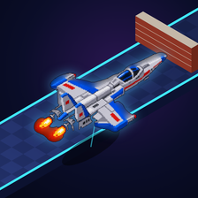
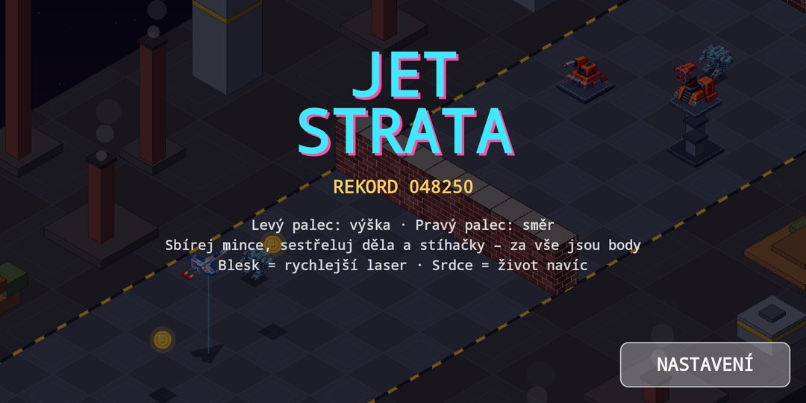
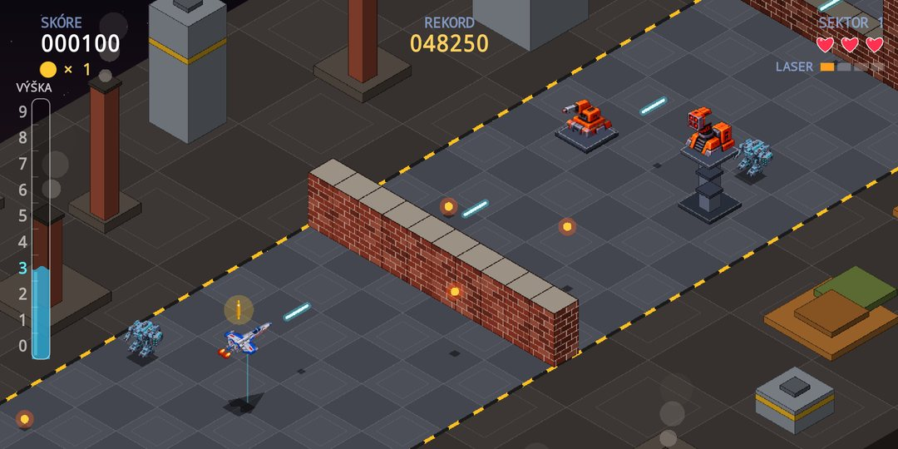
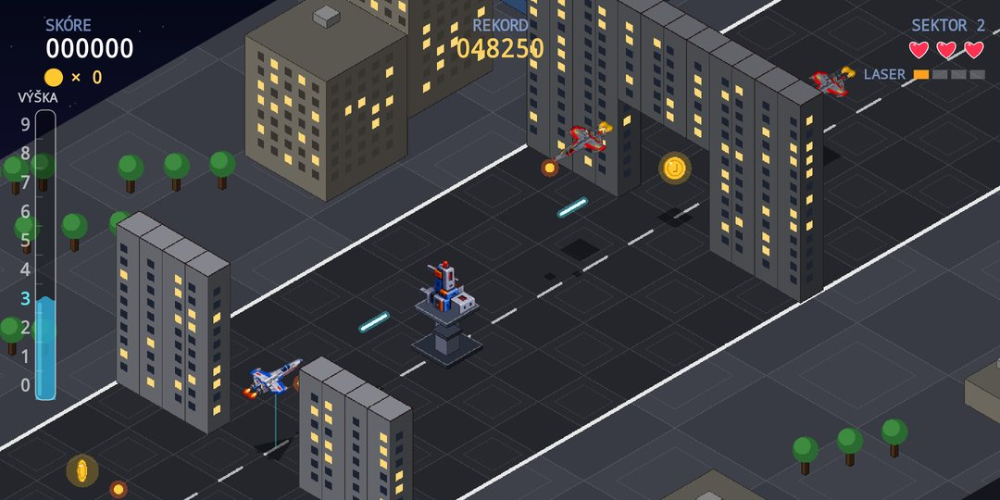
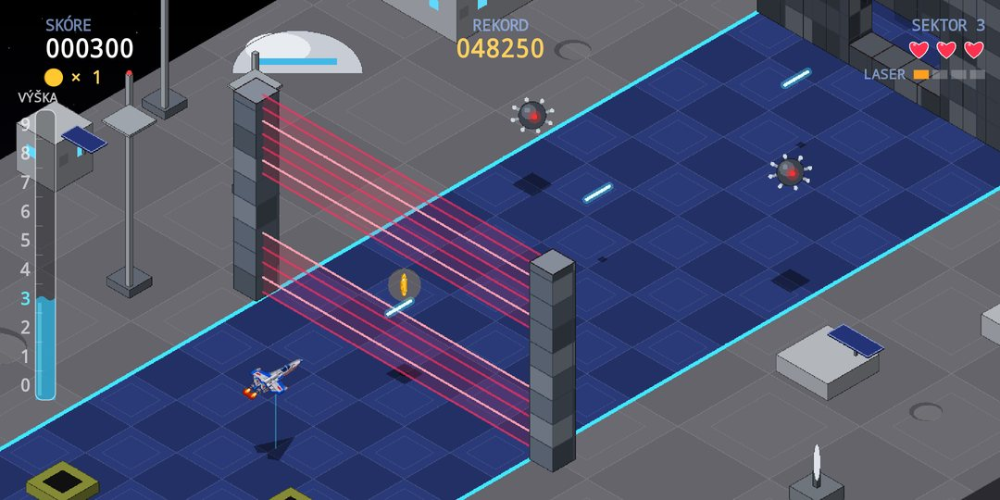
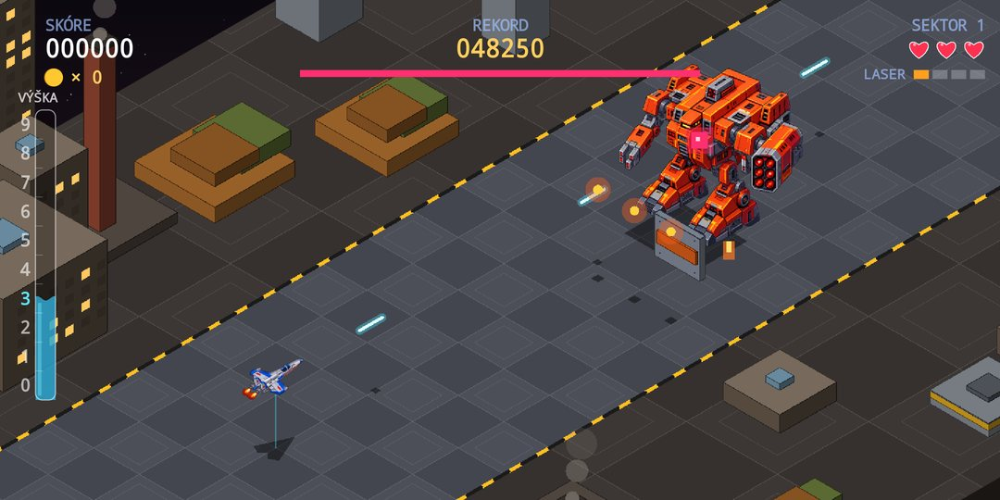
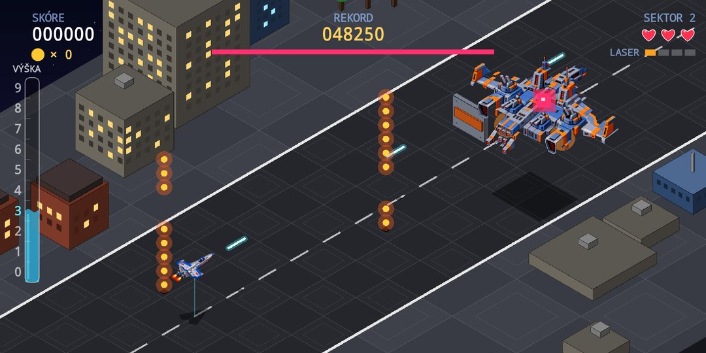

Rdanhel Dev
Rdanhel Dev
ProjektJet Strata
Izometrická retro střílečka v pixel-art stylu. Stíhačka letí po trati šikmo přes obrazovku a sama střílí. Ty řídíš, kam do strany a v jaké výšce: zdi z cihel, otvory v různých patrech, laserové bariéry a děla na sloupech prověří, jak dobře odhadneš výšku. Tři sektory, tři Strážci a s každým dalším okruhem rychleji.
Hra v kostce
Dva palce, deset podlaží a trať plná překážek.
Ovládání dvěma palci
Levý palec mění výšku, pravý řídí let do stran. Komu to víc sedí obráceně, prohodí palce v nastavení. Střílí se automaticky.
Výška po podlažích
Letíš v podlažích 0 (těsně nad zemí) až 9 (strop). Výškoměr ve tvaru láhve ukazuje, kde právě jsi, stín se svislou čarou pomáhá odhadnout polohu. Kde je ve zdi díra, musíš poznat sám.
Soupeři střílí rovně
Děla, stíhačky i roboti pálí vždy rovně ve své výšce. Před střelou se dá uhnout do strany nebo změnou podlaží. Děla na sloupech jde trefit jen z jejich podlaží.
Mince a power-upy
Mince a sestřelení dávají body. Blesk zrychlí tvůj laser (palba začíná na minimu) a srdce přidá život – v každém sektoru dvě.
Strážci se štíty
Na konci sektoru čeká Strážce. Zranitelné je jen jeho jádro a kolem krouží štíty: v první třetině boje jeden, pak dva a nakonec tři. Každý Strážce útočí jinak.
Pixel-art a retro zvuk
Ručně laděné pixel-art sprity lodí, robotů a věží, zástavba kolem trati podle tématu sektoru a zvuky generované čipovým syntezátorem.
Tři sektory, tři Strážci
Každý sektor má vlastní krajinu, zdi a skladbu nepřátel. Po třetím se pokračuje znovu a rychleji.
- Továrna robotů – cihlové zdi, haly a kouřící komíny, po zemi chodí malí roboti. Strážce: obrněný mech, který střílí salvy vedle sebe.
- Město – noční mrakodrapy, silnice a mosty mezi budovami, hodně stíhaček. Strážce: létající pevnost se sloupcem střel přes všechna podlaží – najdi mezeru.
- Měsíční základna – kopule, antény, krátery, raketová sila a miny. Strážce: měsíční tank s řadou střel přes celou šířku, který navíc vypouští miny.
Hra v číslech
- Sektory 3 + okruhy dokola
- Výška 10 podlaží (0–9)
- Strážci 3, každý útočí jinak
- Věže 5 druhů v každém sektoru
- Životy 3 (až 9)
- Oprávnění a internet žádné
Screenshoty






Ke stažení
Jet Strata je zdarma, bez reklam a bez nákupů v aplikaci. Nepotřebuje internet ani žádná oprávnění. Aplikace se připravuje k vydání na Google Play.
Android – Google Play
Odkaz na Google Play přibude hned po vydání aplikace. Zásady ochrany osobních údajů jsou k dispozici už teď.